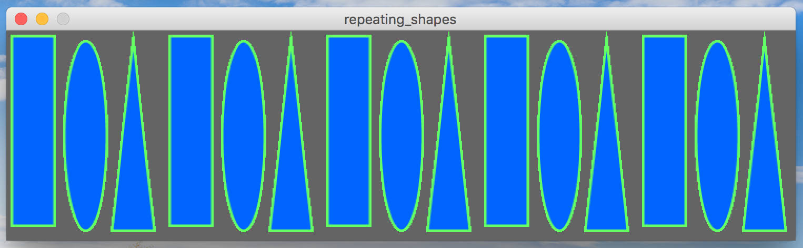

You will write a processing program that generates the pattern of shapes shown below:

All you need to do is draw this pattern… Simple!
One caveat: You may not draw each rectangle and ellipse with their own calls to the rect(), ellipse(), and triangle() functions.
Instead, you must use one or two for-loops to draw all of these shapes!
I recommend writing one for-loop to draw all of the rectangles, with extra space in-between each one. Then, write another for-loop to draw the 5 ellipses in the space leftover, in-between each rectangle. Finally, write a third for-loop to draw all of the triangles. The canvas should be large enough to fit all of the shapes. Each shape should be 40 pixels wide, with a little bit of space in-between each shape (as seen in the picture). As usual, feel free to experiment with other colors, but the shapes and pattern must be the same as the picture above.
If you need a refresher on for-loops, check out the slides from lecture. There are several examples demonstrating how to use for-loops in there.
The whole point of this assignment is to give you a little practice and warm-up using for-loops! You must use 3 for-loops to get full points. If you write your program without using for-loops, points will be deducted from your grade.
Put all of your code in a project file named repeating_shapes.pde.
You should only use processing features that we have discussed up to this point, or otherwise allowed by the instructor.
You must use the setup and draw functions, like we discussed in class.
Your program file should have a “header” comment at the top that has the following format:
//
// Author: Student Name
// Description:
// A short description of what this program does!
//
Even though this is a small program, it is important to get in the habit of commenting on your code. This is considered good programming style, and it even more helpful once you start writing larger programs.
This was assigned on 9/8/2017. It is due on 9/15/2017 at 5:00pm.
Turn in each of the files described in the spec (1 total) the assignment 3 drop-box in D2L before the due date. Make sure to name the files exactly as this document specifies. In general, make sure to follow these instructions precisely. If you don’t, we will deduct points!!!